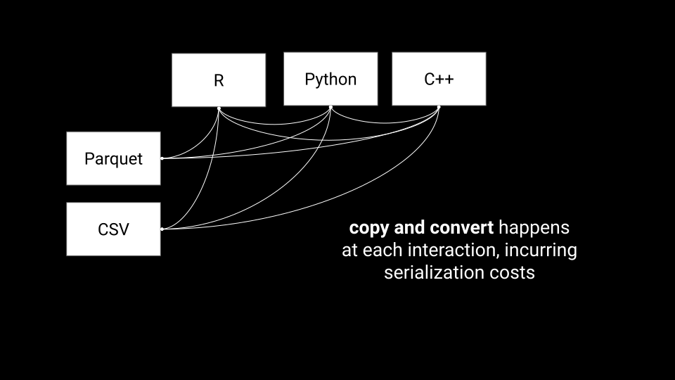
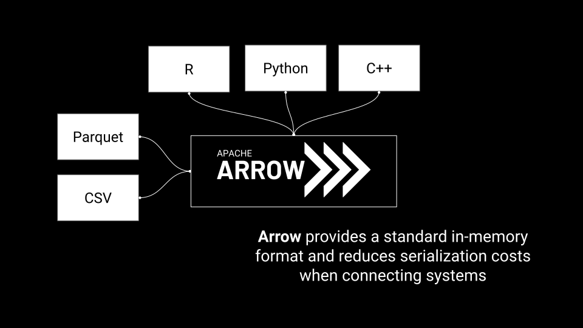

layout: true <div class="my-footer"> <span> <!-- You could put a footer link in here, which I used to do for a lot of my other slide decks, but it probably doesn't work well with this theme --> </span> </div> --- class: title-slide, theme-green-maximal <!-- title slide style --> .center[.large[.boldface[Geospatial and Apache Arrow:<br>accelerating geospatial data exchange and compute ]]] <!-- title, one line --> .center[.midi[Joris Van den Bossche and Dewey Dunnington]] <!-- author, one line --> .center[.midi[Voltron Data]] <!-- general info, one line --> <!-- font-size classes (relative to normal 100%) .larger = 200% .large = 130% .midi = 85% .small = 70% .xsmall = 60% .tiny = 50% --> --- class: theme-green-minimal ## About Us <div> <img style="width: 200px; float: left; margin-right: 50px;" src="img/joris.png" /> <p>Joris Van den Bossche</p> <ul style="padding-left: 25px;"> <li>Arrow Project Management Committee</li> <li>Pandas maintaner</li> <li>Geopandas maintainer</li> </ul> </div> <div style="margin-top: 50px;"> <img style="width: 200px; float: left; margin-right: 50px;" src="img/dewey.jpg" /> <p>Dewey Dunnington</p> <ul> <li>Arrow committer</li> <li>r-spatial maintainer</li> <li>Ph.D. Earth & Environmental Science</li> <ul> </div> --- class: theme-green-minimal ## What is Apache Arrow? > A specification defining a common, language-agnostic <br> > in-memory representation for columnar data <br> > \+ <br> > A multi-language toolbox for accelerated data interchange <br> > and in-memory processing .abs-layout.bottom-1.left-70.width-40[  ] <!-- ## What is Apache Arrow? --> <!-- - Toolbox for in-memory analytics --> <!-- - Toolbox for larger than memory data --> <!-- - Toolbox for connecting languages and hardware --> <!-- - Efficient, performant, open source --> <!-- - Details at [arrow.apache.org](https://arrow.apache.org) --> <!----------------------------------------------------------------------------> --- class: theme-green-minimal ## Accelerating data interchange <p style="margin-bottom: 20px;"></p> <p style="margin-top: 20px;"><span class="small">Image by Danielle Navarro</span></p> <!----------------------------- SLIDE BREAK -----------------------------> --- class: theme-green-minimal ## Accelerating data interchange <p style="margin-bottom: 20px;"></p> <p style="margin-top: 20px;"><span class="small">Image by Danielle Navarro</span></p> <!----------------------------- SLIDE BREAK -----------------------------> --- class: theme-green-minimal ## Efficient in-memory processing <p style="margin-bottom: 20px;"><img src="img/simd-1.svg" width="70%"></p> <p style="margin-top: 20px;"><span class="small">Image by Danielle Navarro</span></p> --- class: theme-green-minimal layout: true name: parquet ## What is Apache Parquet? From http://parquet.apache.org/: .abs-layout.bottom-1.left-50.width-40[  ] --- layout: false template: parquet count: false > *Apache Parquet is an open source, column-oriented data file format designed for efficient data storage and retrieval. It provides efficient data compression and encoding schemes with enhanced performance to handle complex data in bulk. Parquet is available in multiple languages including Java, C++, Python, etc...* --- count: false > *Apache Parquet is an open source, column-oriented data file format designed for efficient data storage and retrieval. It provides efficient data compression and encoding schemes with enhanced performance to handle complex data in bulk. Parquet is available in multiple languages including Java, C++, Python, etc...* ➔ Widely used file format to store large amounts of data (data lakes) for analytical processing, often in cloud context --- layout: false class: theme-green-minimal ## Apache Arrow - Fast data access - Data interchange (over network, inter-process, in-process) - Efficient runtime data structure for analytics - Sharing implementations and computational tools --- class: theme-green-minimal count: false ## Apache Arrow + Geospatial - Fast data access - Data interchange (over network, inter-process, in-process) - Efficient runtime data structure for analytics - Sharing implementations and computational tools ➔ All relevant for geospatial data as well! (with a focus on tabular vector data) --- class: theme-green-minimal ## Data Interchange  --- class: theme-green-minimal ## Data Interchange with Apache Arrow  <div style="margin-bottom: -20px;"></div> [RFC 86: Column-oriented read API for vector layers](https://github.com/OSGeo/gdal/pull/5830) by Even Rouault (coming to GDAL 3.6) --- class: theme-light-minimal <img style="position: absolute; top: 65px; margin-left: auto; margin-right: auto; left: 0; right: 0; width: 60%;" src="fig-wkb-geoarrow/img-wkb.png" /> --- class: theme-light-minimal <img style="position: absolute; top: 65px; margin-left: auto; margin-right: auto; left: 0; right: 0; width: 60%;" src="fig-wkb-geoarrow/img-geoarrow.png" /> --- class: theme-green-minimal ## Apache Arrow + Geospatial Apache Parquet = file format Apache Arrow = memory format (+ ...) -- count: false ➔ GeoParquet -> how do we use Parquet to store geospatial data GeoArrow -> how do we represent geospatial data in Arrow memory --- layout: false class: theme-green-minimal ## What is GeoParquet? Goal: > *Standardize how geospatial data is represented in Parquet to further geospatial interoperability among tools using Parquet today, and hopefully help push forward what's possible with 'cloud-native geospatial' workflows.* ➔ Specification how to store geospatial vector data in Parquet files * Which data type to use (currently WKB as variable-size binary (BYTE_ARRAY)) * Metadata (encoding, coordinate reference system, geometry types, planar vs spherical edges, ...) --- class: theme-green-minimal ## GeoArrow: an Arrow-native storage format for vector geometries - Arrow defines a rich set of types to encode arrays of pretty much anything...integers, doubles, strings, dates, times, nested lists, and more. - It doesn't define an encoding for geometry! - The GeoArrow specification is an attempt to formalize the encoding of geometry in an Arrow Array. - Efficient format for direct computation .center[ https://github.com/geopandas/geo-arrow-spec ] --- class: theme-green-minimal # GeoArrow GeoJSON "logical" representation: ``` { "type": "Polygon", "coordinates": [ [[35.0, 10.0], [45.0, 45.0], [15.0, 40.0], [10.0, 20.0], [35.0, 10.0]], [[20.0, 30.0], [35.0, 35.0], [30.0, 20.0], [20.0, 30.0]] ] } ``` GeoArrow physical representation for a "nested list": ``` coordinates array: [35.0, 10.0, 45.0, 45.0, 15.0, 40.0, 10.0, 20.0, 35.0, 10.0, 20.0, 30.0, 35.0, 35.0, 30.0, 20.0, 20.0, 30.0, ...] ring offsets array: [0, 5, 9, ...] polygon offsets array: [0, 2, ...] ``` <!-- class: theme-green-minimal ## GeoArrow: Point POINT (0 0), POINT (2 0), POINT (0 1), POINT(0 0) `Coordinates <double[8]>: 0 0 2 0 0 1 0 0` `FixedSizeList<xy: double[2]>` --> <!-- class: theme-green-minimal ## GeoArrow: Linestring LINESTRING (0 0, 2 0, 0 1, 0 0) `Coordinates <double[8]>: 0 0 2 0 0 1 0 0` `Vertex offsets <int32[2]>: 0 4` `List<vertices: FixedSizeList<xy: double[2]>>` --> <!-- class: theme-green-minimal ## GeoArrow: Polygon POLYGON ((0 0, 2 0, 0 1, 0 0)) `Coordinates <double[8]>: 0 0 2 0 0 1 0 0` `Vertex offsets <int32[2]>: 0 4` `Ring offsets <int32[2]>: 0 1` `List<rings: List<vertices: FixedSizeList<xy: double[2]>>>` --> ??? It's fast to iterate over geometry arranged in buffers designed for random access! Geospatial functions in Acero will enable unlock smooth and performant workflows for all types of geospatial data ??? ## Adoption and Applications (logos for projects that already are using Parquet/Arrow/Geo in some form) Listing some of the existing examples: - GeoMesa - Kyle’s JavaScript post - cuSpatial GPU support - Microsoft thinger And other places it can be useful --- class: theme-green-minimal ## Want to know more? Long version of this presentation at The Data Thread: https://www.youtube.com/watch?v=PbO5FVcPUIQ Blogposts: * Building Bridges: Arrow, Parquet, and Geospatial Computing - Dewey Dunnington: https://dewey.dunnington.ca/post/2022/building-bridges-arrow-parquet-and-geospatial-computing/ * GeoArrow and GeoParquet in deck.gl - Kyle Barron: https://observablehq.com/@kylebarron/geoarrow-and-geoparquet-in-deck-gl --- class: theme-green-maximal ## What next? .pull-left[ - Ongoing specification development - Continued support for GeoParquet - Continued support for GeoArrow ] .pull-right[ <ol class="fa-ul"> <li><span class="fa-li"><i class="fa fa-twitter"></i></span>twitter.com/jorisvdbossche</li> <li><span class="fa-li"><i class="fa fa-twitter"></i></span>twitter.com/paleolimbot</li> <li><span class="fa-li"><i class="fa fa-github"></i></span>github.com/geopandas/geo-arrow-spec</li> <li><span class="fa-li"><i class="fa fa-github"></i></span>opengeospatial/geoparquet</li> </ol> ]